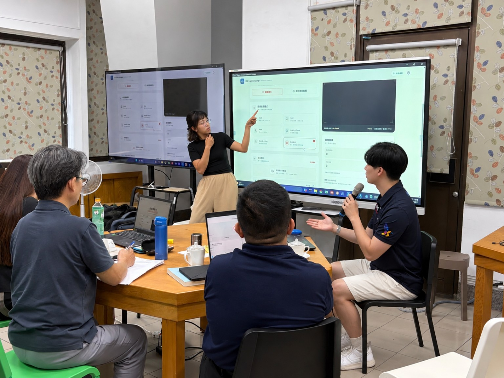

Outreach and Accessibility
Interdisciplinary collaboration, education, and accessible tools for sign language research.
Interdisciplinary Collaboration
Sign language AI lies at the intersection of computer science, linguistics, and human-centered technology. Meaningful progress requires collaboration between language specialists, signing communities, and technology researchers. Linguistic and cultural expertise helps define meaningful research questions, while computational methods provide tools for analyzing and modeling signing.
My work seeks to bridge these disciplines by connecting computational methods with linguistic expertise. As a research assistant at the Graduate Institute of Linguistics, National Chung Cheng University, I contribute to research on Taiwan Sign Language and develop tools that support participation by researchers with different technical backgrounds.
AI Education for Sign Language Researchers

Sign Language Linguistics and Artificial Intelligence
As a teaching assistant at the Graduate Institute of Linguistics, National Chung Cheng University, I support students and sign language researchers in applying artificial intelligence to linguistic research.
My teaching activities focus on practical machine learning, landmark extraction, data preparation, and sign language recognition. By combining hands-on instruction with accessible software tools, I aim to help individuals without programming backgrounds independently explore computational approaches to sign language research.
Accessible Research Tools
I design lightweight software to reduce barriers to participating in computational sign language research. These tools are intended for supported research and educational workflows, rather than replacing domain expertise or careful model evaluation.
Hardware accessibility
CPU-friendly workflows; no dedicated GPU required.
Technical accessibility
Graphical interfaces without programming for supported tasks.
Language accessibility
English and Traditional Chinese editions.
Cross-platform access
Windows and macOS releases; performance depends on hardware and data size.

Responsible and Inclusive AI
Accessibility should be considered throughout the design of AI systems. I aim to support meaningful participation by sign language researchers, educators, students, and signing communities, while respecting the linguistic and cultural characteristics of sign languages. Careful evaluation with relevant expertise is essential, particularly when models are intended to represent or generate signing.
My broader research goals in sign language understanding, translation, and generation are described on the Taiwan Sign Language Research page.